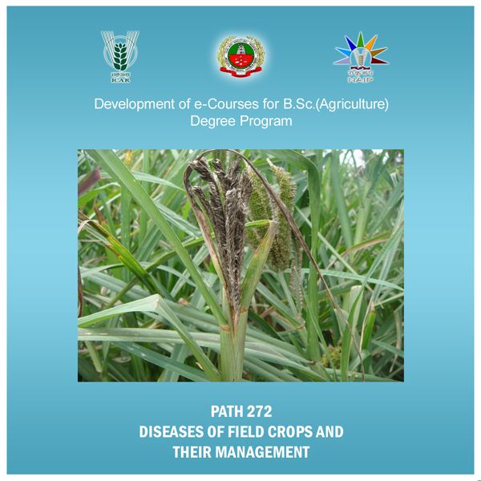

Home
Lecture 01 - Rice
Lecture 02 - Sorghum
Lecture 03 - Wheat
Lecture 04 - Pearl Millet
Lecture 05 - Maize
Lecture 06 - Sugarcane
Lecture 07 - Turmeric
Lecture 08 - Tobacco
Lecture 09 - Groundnut
Lecture 10 - Castor
Lecture 11 - Sunflower
Lecture 12 - Sesamum
Lecture 13 - Cotton
Lecture 14 - Red gram
Lecture 15 - Black gram
Lecture 16 - Green Gram
Lecture 17 - Bengal Gram
Lecture 18 - Soyabean
DISEASE OF FIELD CROP AND THEIR MANAGEMENT
